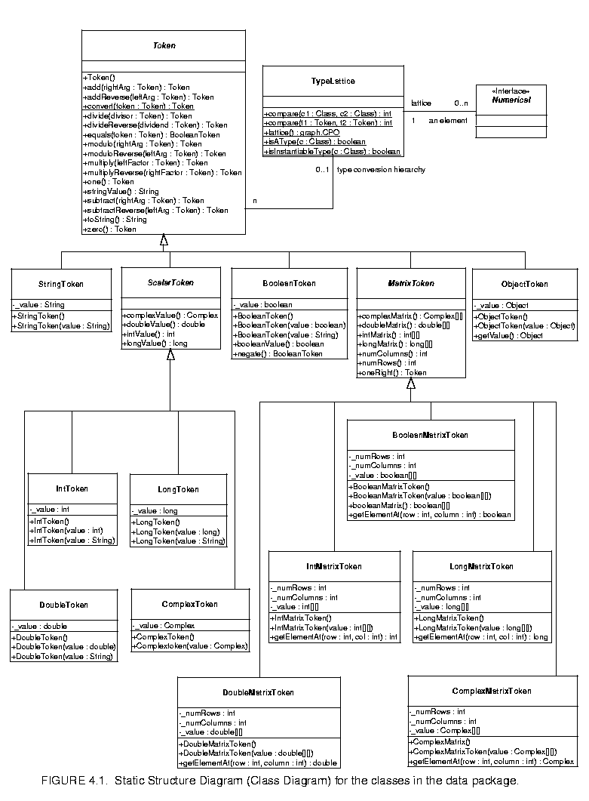
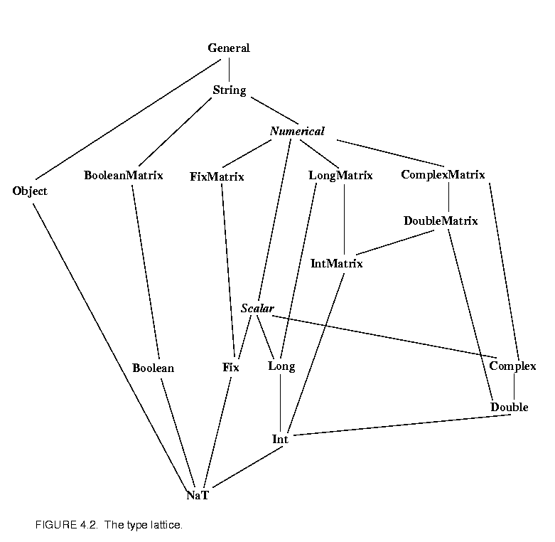
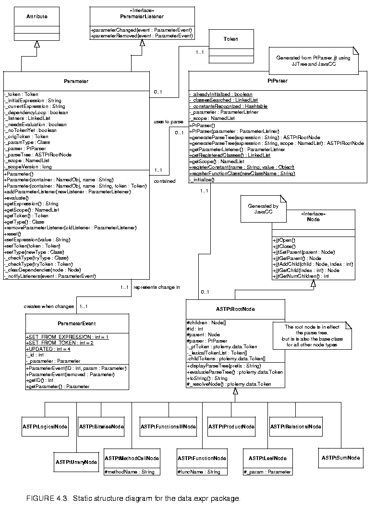
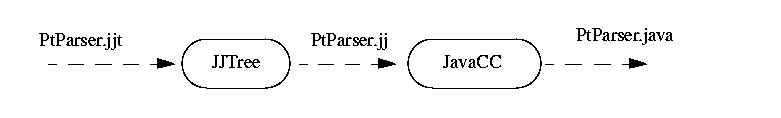
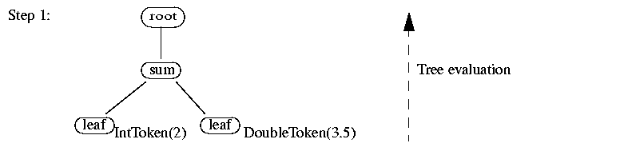
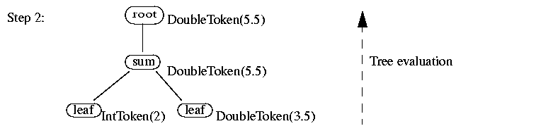

Page 6 out of 12 total pages
The data package provides data encapsulation, polymorphism, parameter handling, an expression language, and a type system. Figure

4.1 shows the key classes in the main package (subpackages will be discussed later).The Token class and its derived classes encapsulate application data. The encapsulated data can be transported via message passing between Ptolemy II objects. Alternatively, it can be used to parameterize Ptolemy II objects. Encapsulating the data in such a way provides a standard interface so that such data can be handled uniformly regardless of its detailed structure. Such encapsulation allows for a great degree of extensibility, permitting developers to extend the library of data types that Ptolemy II can handle. It also permits a user interface to interact with application data without detailed prior knowledge of the structure of the data.
Tokens in Ptolemy II, except ObjectToken, are immutable. This means that their value cannot be changed after the instance of Token is constructed. The value of a token must therefore be specified as a constructor argument, and there must be no other mechanism for setting the value. If the value must be changed, then a new instance of Token must be constructed.
There are several reasons for making tokens immutable.
An ObjectToken contains a reference to an arbitrary Object created by the user. Since the user may modify the Object after the token is constructed, ObjectToken is an exception to immutability. Moreover, the getValue() method returns a reference to the token. That reference can be used to modify the object. Although ObjectToken could clone the object in the constructor and return another clone in getValue(), this would require the object to be cloneable, which severely limits the use of the ObjectToken. In addition, even if the object is cloneable, since the default implementation of clone() only makes a shallow copy, it is still not enough to enforce immutability. In addition, cloning a large object could be expensive. For these reasons, the ObjectToken does not enforce immutability, but rather relies on the cooperation of the user. Violating this convention could lead to unintended non-determinism.
For matrix tokens, immutability requires the contained matrix (Java array) to be copied when the token is constructed, and when the matrix is returned in response to the queries such as intMatrix(), doubleMatrix(), etc. This is because arrays are objects in Java. Since the cost of copying large matrix is non-trivial, the user should not make more queries then necessary. The getElementAt() method should be used to read the contents of the matrix.
One of the goals of the data package is to support polymorphic operations between tokens. For this, the base Token class defines methods to overload the primitive arithmetic operations, which are add(), multiply(), subtract(), divide(), modulo() and equals(). Derived classes overload these methods to provide class specific operation where appropriate. The objective here is to be able to say, for example,
a.add(b)
where a and b are arbitrary tokens. If the operation a + b makes sense for the particular tokens, then the operation is carried out and a token of the appropriate type is returned. If the operation does not make sense, then an exception is thrown. Consider the following example
IntToken a = new IntToken(5);
DoubleToken b = new DoubleToken(2.2);
StringToken c = new StringToken("hello");
a.add(b)
gives a new DoubleToken with value 7.2,
a.add(c)
gives a new StringToken with value "5Hello", and
a.modulo(c)
throws an exception. Thus in effect we have overloaded the operators +, -, *, /, % and ==.
It is not always immediately obvious what is the correct implementation of an operation and what the return type should be. For example, the result of adding an integer token to a double-precision floating-point token should probably be a double, not an integer. The mechanism for making such decisions depends on a type hierarchy that is defined separately from the class hierarchy. This type hierarchy is explained in detail below.
The token classes also implement the methods zero() and one() which return the additive and multiplicative identities respectively. These methods are overridden so that each token type returns a token of its type with the appropriate value. For numerical matrix tokens, zero() returns a zero matrix whose dimension is the same as the matrix of the token where this method is called; and one() returns the left identity, i.e., it returns an identity matrix whose dimension is the same as the number of rows of the matrix of the token. Another method oneRight() is also provided in numerical matrix tokens, which return the right identity, i.e., the dimension is the same as the number of columns of the matrix in the token.
Since data is transferred between entities using Tokens, it is straightforward to write polymorphic actors that receive tokens on their inputs, perform one or more of the overloaded operations and output the result. For example an add actor that looks like
this:
Token input1, input2, output;
// read Tokens from the input channels into input1 and input2 variables
output = input1.add(input2);
// send the output Token to the output channel.
We call such actors data polymorphic to contrast them from domain polymorphic actors, which are actors that can operate in multiple domains. Of course, an actor may be both data and domain polymorphic.
For the above arithmetic operations, if the two tokens being operated on have different types, type conversion is needed. In Ptolemy II, only conversions that do not lose information are implicitly performed. Lossy conversions must be explicitly done by the user, either through casting or by other means. The lossless type conversion relation among different token types is modeled as a partially ordered set called the type lattice, shown in figure

4.2. In that diagram, type A is greater than type B if there is a path upwards from B to A. Thus, ComplexMatrix is greater than Int. Type A is less than type B if there is a path downwards from B to A. Thus, Int is less than ComplexMatrix. Otherwise, types A and B are incomparable. Complex and Long, for example, are incomparable.In the type lattice, a type can be losslessly converted to any type greater than it. This hierarchy is related to the inheritance hierarchy of the token classes in that a subclass is always less than its super class in the type lattice. However, some adjacent types in the lattice are not related by inheritance.
This hierarchy is realized by the TypeLattice class. Each element in the lattice is an instance of the Java class Class corresponding to a token type. The top element, General, which is "the most general type", is represented by the base class Token; the bottom element, NaT (Not a Type), is represented by java.lang.Void.TYPE. The TypeLattice class provides methods to compare two token types.
Two of the types, Numerical and Scalar, are abstract. They cannot be instantiated. This is indicated in the type lattice by italics.
Type conversion is done by the static method convert() in the token classes. This method converts the argument into an instance of the class implementing this method. For example, DoubleToken.convert(Token token) converts the specified token into an instance of DoubleToken. The convert() method can convert any token immediately below it in the type hierarchy into an instance of its own class. If the argument is higher in the type hierarchy, or is incomparable with its own class, convert() throws an exception. If the argument to convert() is already an instance of its own class, it is returned without any change.
The implementation of the add(), subtract(), multiply(), divide(), modulo(), and equals() methods requires that the type of the argument and the implementing class be comparable in the type hierarchy. If this condition is not met, these methods will throw an exception. If the type of the argument is lower than the type of the implementing class, then the argument is converted to the type of the implementing class before the operation is carried out.
The implementation is more involved if the type of the argument is higher than the implementing class, in which case, the conversion must be done in the other direction. Since the convert() method only knows how to convert types lower in the type hierarchy up, the operation must take place in the class of the argument. Furthermore, since many of the supported operations are not commutative, for example, "Hello" + "world" is not the same as "world" + "Hello", and 3-2 is not the same as 2-3, the implementation of the arithmetic operations cannot simply call the same method on the class of the argument. Instead, a separate set of methods must be used. These methods are addReverse(), subtractReverse(), multiplyReverse(), divideReverse(), and moduloReverse(). The equality check is always commutative so no equalsReverse() is needed. Under this setup, a.add(b) means a+b, and a.addReverse(b) means b+a, where a and b are both tokens. If, for example, when a.add(b) is invoked and the type of b is higher than a, the add() method of a will automatically call b.addReverse(a) to carry out the addition.
For scalar and matrix tokens, methods are also provided to convert the content of the token into another numeric type. In ScalarToken, these methods are intValue(), longValue(), doubleValue(), and ComplexValue() (fixValue() will be added later). In MatrixToken, the methods are intMatrix(), longMatrix(), doubleMatrix(), and ComplexMatrix() (fixMatrix() will be added later). The default implementation in these two base classes just throw an exception. Derived classes override the methods if the corresponding conversion is lossless, returning a new instance of the appropriate class. For example, IntToken overrides all the methods defined in ScalarToken, but DoubleToken does not override intValue(). A double cannot, in general, be losslessly converted to an integer.
As of this writing, the following issues remain open:
add() and addReverse() methods are supported; other arithmetic operations are not implemented yet.
A Parameter in Ptolemy II is a container for a Token. Ptolemy II has only a single Parameter class, shown in figure

4.3, in contrast to Ptolemy 0.x, which had a plethora of type-specific parameter classes. The Parameter class is derived from ptolemy.kernel.util.Attribute and so that instances can be attached to any instance of NamedObj. Since most interesting classes in Ptolemy II are derived from NamedObj, most classes can have parameters attached to them.
The token stored in a parameter can be set in two ways, either by simply placing an instance of Token in the parameter, or by giving the parameter an expression (represented as a string) which is evaluated to produce a token. If the parameter is given a string expression, the expression must be evaluated via a call to evaluate(). The expression language recognized by parameters is explained below. If there is an expression waiting to be evaluated and getToken() is invoked, then the expression will be automatically evaluated before returning the token. As an example, consider the following code segment:
Parameter p = new Parameter();
p.setExpression("1.6 + 8.3");
p.evaluate();
System.out.println(p.getToken().stringValue());
// Now put a new token into the Parameter
DoubleToken t = new DoubleToken(7.7);
p.setToken(t);
System.out.println(p.getToken().stringValue());
// Now set the value from a String expression
p.setExpression("(true) ? 5.5 : \"hello\"");
System.out.println(p.getToken().stringValue());
The result of running this code segment will be:
9.9
7.7
5.5
The syntax of expressions is described below in section 4.5.
An expression given to a parameter can refer by name to other parameters within the scope of this parameter. The scope of a parameter is the set of parameters contained by the same NamedObj and those contained by the NamedObj one level up in the hierarchy (i.e. contained by the container of the container of this Parameter, if it has one). In the above example, no container was specified, so there are no other parameters within the scope of the parameter. The following code segment illustrates expressions that use other parameters:
Entity e = new Entity();
Parameter p1 = new Parameter(e,"p1", new DoubleToken(1.1));
Parameter p2 = new Parameter(e,"p2", new DoubleToken(2.2));
Parameter p3 = new Parameter(e,"p3");
p3.setExpression("p1 + p2");
System.out.println(p3.getToken().stringValue());
3.3
Note therefore that parameters can be used as variables. If two parameters have complicated expressions with a common factor, this common factor could be placed in a separate parameter to be referenced by the other parameters. The syntax of expressions is described below in section 4.5.
The type of a parameter is defined to be the type of the first token placed in it (which may be the result of evaluating an expression, or may be given directly). For example if the first Token placed in a Parameter is of type DoubleToken, then the parameter is of type double. Any Token that can be converted in a lossless fashion to a token matching the type of the parameter can be placed in the parameter. Thus, for example, an IntToken could be placed in a parameter of type double, but a ComplexToken could not. An attempt to do so will trigger an exception. Lossless type conversion will be covered below.
The type of a parameter can be modified via a call to setType(). The new type of the parameter must be compatible with the token already in the Parameter. This can be used to relax the type of a parameter. For example you may want to have a parameter constrained to tokens of type double, even though the first token placed in it was an IntToken. The parameter could not contain a DoubleToken until setType() is called with the appropriate argument.
The setType() method can also be used to constrain the type of a Parameter. For example if the first token placed in a parameter was a DoubleToken, but it now contains an IntToken, then you could constrain the parameter to only contain IntTokens from now on by calling setType() with an IntToken class argument.
If an object (generally another parameter) wants to be kept notified of changes in a particular parameter, it must implement the ParameterListener interface and register itself as a listener of that parameter. When the parameter evaluates an expression which refers to another parameter within its scope, it is registered as a listener with that parameter. When a parameter changes it creates a ParameterEvent which contains information about how it changed, and passes it to all registered listeners by calling their parameterChanged() method. In this way a parameter gets updated whenever the value of a parameter it references changes. For example, if param1 and param2 are two parameters attached to the same NamedObj, both with the same names as the variables used to reference them, then after the following code
param1.setToken(new DoubleToken(5.5));
param2.setExpression(param1 + 2);
param2.evaluate();
param2 will be registered as a ParameterListener of param1. Then if the Token in param1 changes, it will create a ParameterEvent and pass it to param2 by invoking parameterChanged() on param2. In this way param2 gets notified of any changes in param1 and updated. This mechanism, of course, is the classic publish-and-subscribe design pattern.
Ptolemy II includes a simple but extensible expression language. This language permits operations on tokens to be specified in a scripting fashion, without requiring compilation of Java code. The expression language can be used to define parameters in terms of other parameters, for example. It can also be used to provide end-users with actors that compute a user-specified expression that refers to inputs and parameters of the actor.
The Ptolemy II expression language uses elements of the syntax of Java. Unlike Java, however, it uses operator overloading. Although we fully agree that the designers of Java made a good decision in omitting operator overloading, our expression language is used in situations where compactness of expressions is extremely important. Expressions often appear in crowded dialog boxes in the user interface, so we cannot afford the luxury of replacing operators with method calls.
The Token classes from the data package form the primitives of the language. For example the number 10 becomes an IntToken with the value 10 when evaluating an expression. Normally this is invisible to the user. The expression language is object-oriented, of course, so methods can be invoked on these primitives. A sophisticated user, therefore, can make use of the fact that "10" is in fact an object to invoke methods of that object.
The expression language is extensible. The basic mechanism for extension is object-oriented. The reflection package in Java is used to recognize method invocations and user-defined constants. We also expect the language to grow over time, so this description should be viewed as a snapshot of its capabilities.
The types currently supported in the language are boolean, complex, double, int, long and string. We expect the language to eventually support all the matrix types as well. Note that there is no float or byte. Use double or int instead. A long is defined by appending an integer with "l" or "L", as in Java. A complex is defined by appending an "i" or a "j" to a double. This gives a purely imaginary complex number which can then leverage the polymorphic operations in the Token classes to create a general omplex number. Thus 2 + 3i will result in the expected complex number. The expression language supports the same lossless type conversion provided by the Token classes (see section 4.3.2). Lossy conversion has to be done explicitly via a method call.
The arithmetic operators are +, -, *, / and %. These operators, along with ==, are overloaded, so their implementation depends on the types being operated on. Operator overloading is achieved using the methods in the Token classes. These methods are add(), subtract(), multiply(), divide(), modulo() and equals().
The bitwise operators are &, |, ^ and ~. They operated on integers.
The relational operators are <, <=, >, >=, == and !=. They return booleans.
The logical boolean operators are &&, ||, !, & and |. They operate on booleans and return booleans. Note that the difference between logical && and logical & is that & evaluates all the operands regardless of whether their value is now irrelevant. Similarly for logical || and |. This approach is borrowed from Java.
The language is an expression language, not an imperative language with sequentially executed statements. Thus, it makes no sense to have the usual if...then...else... construct. Such a construct in Java (and most imperative languages) depends on side effects. However, Java does have a functional version of this construct (one that returns a value). The syntax for this is
boolean ? value1 : value2
If the boolean is true, value1 is returned, else value2 is returned. The Ptolemy II expression language uses this same syntax.
Anything inside /*...*/ is ignored, as is the rest of a line following //. (Expressions can be split over multiple lines).
Expressions can contain references by name to parameters within the scope of the expression. An example is given above in section 4.4.2. Consider a parameter P with container X which is in turn contained by Y. The scope of an expression for P includes all the parameters contained by X and Y. The scope is implemented as an instance of NamedList, which provides a symbol table. Note that a class derived from Parameter may define scope differently.
If an identifier is encountered in an expression that does not match a parameter in the scope, then it might be a constant which has been registered as part of the language. By default only the constants PI and E are registered, but as we will see later, this can easily be extended by a user. In addition, literal constants are supported. Anything between quotes, "...", is interpreted as a string constant. Numerical values without decimal points, such as "10" or "-3" are integers. Numerical values with decimal points, such as "10.0" or "3.14159" are doubles.
The language includes an extensible set of functions, such as sin(), cos(), etc. The functions that are built in include all static methods of the java.lang.Math class and the ptolemy.data.expr.UtilityFunctions class. As we will see below in section 4.5.2, this can easily be extended by a user by registering another class that includes static methods.
Every element and subexpression in an expression represents an instance of Token (or more likely, a class derived from Token). The expression language supports invocation of any method of a given token, as long as the arguments of the method are of type Token and the return type is Token (or a class derived from Token). The syntax for this is (token).name(args), where name is the name of the method and args is a comma-separated set of arguments. Each argument can itself be an expression. Note that the parentheses around the token are required. As an example, this could be used to convert a number to a string as follows
(2*4-6.5).stringValue()
This returns the string "1.5". The expression (2*4-6.5) evaluates to a double token, and stringValue() is a method of DoubleToken.
Note that methods, unlike functions, must take arguments that are of type Token. This is logical because the methods belong to instances of class Token. Functions, however, are implemented as static methods of some other class, such as java.lang.Math. Those classes cannot be expected to define interfaces with Token. Thus, Tokens are converted, if this can be done losslessly, to the type expected by the function.
By default all of the static methods in java.lang.Math and ptolemy.data.expr.UtilityFunctions are available. The functions currently supported in ptolemy.data.util.UtilityFunctions are:
readFile("filename") function, and
eval("..."). For example one use of eval() might be eval(readFile("foo.bar")).
Eventually we hope to support calls to external packages such as matlab or tcl via tcl("...") or matlab("..."). Note this only requires that whatever is inside the parenthesis resolve to a StringToken, so we could have for example tcl("puts " + xx) where xx is a Parameter in the scope. We also plan to support access to system environment variables via env("name").
The expression language has a rich potential, and only some of this potential has been realized. Here are some of the current limitations:
eval() and readFile().
The evaluation of an expression is done in two steps. First the expression is parsed to create an abstract syntax tree (AST) for the expression. Then the AST is evaluated to obtain the token to be placed in the parameter. In this appendix, "token" refers to instances of the Ptolemy II token classes, as opposed to lexical tokens generated when an expression is parsed.
In PtolemyII the expression parser, called PtParser, is generated using JavaCC and JJTree. JavaCC is a compiler-compiler that takes as input a file containing both the definitions of the lexical tokens that the parser matches and the production rules used for generating the parse tree for an expression. The production rules are specified in Backus normal form (BNF). JJTree is a preprocessor for JavaCC that enables it to create an AST. The parser definition is stored in the file PtParser.jjt, and the generated file is PtParser.java. Thus the procedure is

Note that JavaCC generates top-down parsers, or LL(k) in parser terminology. This is different from yacc (or bison) which generate bottom-up parsers, or more formally LALR(1). The JavaCC file also differs from yacc in that it contains both the lexical analyzer and the grammar rules in the same file.
The input expression string is first converted into lexical tokens, which the parser then tries to match using the production rules for the grammar. Each time the parser matches a production rule it creates a node object and places it in the abstract syntax tree. The type of node object created depends on the production rule used to match that part of the expression. For example, when the parser comes upon a multiplication in the expression, it creates an ASTPtProductNode.
The parser takes as input a string, and optionally a NamedList of parameters to which the input expression can refer. That NamedList is the symbol table. If the parse is successful, it returns the root node of the abstract syntax tree (AST) for the given string. Each node object can contain a token, which represents both the type and value information for that node. The type of the token stored in a node, e.g. DoubleToken, IntToken etc., represents the type of the node. The data value contained by the token is the value information for the node. In the AST as it is returned from PtParser, the token types and values are only resolved for the leaf nodes of the tree.
One of the key properties of the expression language is the ability to refer to other tokens by name. Since an expression that refers to other parameters may need to be evaluated several times (when the referred parameter changes), it is important that the parse tree does not need to be recreated every time. When an identifier is parsed, the parser first checks whether it refers to a parameter within the current scope. If it does it creates a ASTPtLeafNode with a reference to that parameter. Note that a leaf node can have a parameter or a token. If it has a parameter then when the token to be stored in this node is evaluated, it is set to the token contained by the parameter. Thus the AST tree does not need to be recreated when a referenced parameter changes as upon evaluation it will just get the new token stored in the referenced parameter. If the parser was created by a parameter, the parameter passes in a reference to itself in the constructor. Then upon parsing a reference to another parameter, the parser takes care of registering the parameter that created it as a listener with the referred parameter. This is how dependencies between parameters get registered. There is also a mechanism built into parameters to detect dependency loops.
If the identifier does not refer to a parameter, the parser then checks if it refers to a constant registered with the parser. If it does it creates a node with the token associated with the identifier. If the identifier is neither a reference to a parameter or a constant, an exception is thrown.
The AST can be evaluated by invoking the method evaluateParseTree() on the root node. The AST is evaluated in a bottom up manner as each node can only determine its type after the types of all its children have been resolved. When the type of the token stored in the root node has been resolved, this token is returned as the result of evaluating the parse tree.
As an example consider the input string 2 + 3.5. The parse tree returned from the parser will look like this:

which will then get evaluated to this:

and DoubleToken(5.5) will be returned as the result.
As seen in the above example, when evaluateParseTree() is invoked on the root node, the type and value of the tokens stored at each node in the tree is resolved, and finally the token stored in the root node is returned. If an error occurs during either the creation of the parse tree or the evaluation of the parse tree, an IllegalArgumentException is thrown with a error message about where the error occurred.
If a node has more than two children, type resolution is done pairwise from the left. Thus "2 + 3 + "hello"" resolves to 5hello. This is the same approach that Java follows.
Each time the parser encounters a function call, it creates an ASTPtFunctionNode object. When this node is being evaluated, it uses reflection to look for that function in the list of classes registered with the parser for that purpose. The classes automatically searched are java.lang.Math and ptolemy.data.expr.UntilityFunctions. To register another class to be searched when a function call is parsed, call registerFunctionClass() on the parser with the full name of the class to be added to the function search path.
When a parameter is informed that another parameter it references has changed, the parameter re-evaluates the parse tree for the expression to obtain the new value. It is not necessary to parse the expression again as the relevant leaf node stores a reference to the parameter, not the token contained in the parameter. Thus at any time, the value of a parameter is up to date.
There are currently eleven node classes used in creating the syntax tree. For some of these nodes the types of their children are fairly restricted and so type and value resolution is done in the node. For others, the operators that they represent are overloaded, in which case methods in the token classes are called to resolve the nodes type and value (i.e. the contained token!). By type resolution we are referring to the type of the token to be stored in the node.
This is created when a bitwise operation(&, |, ^) happens. Type resolution occurs in the node. The & and | operators are only valid between two booleans, or two integer types. The ^ operator is only valid between two integer types.
This represents the leaf nodes in the AST. The parser will always place either a token of the appropriate type (e.g. IntToken if "2" is what is parsed) or a parameter in a leaf node. A parameter is placed so that the parse tree can be reevaluated without reparsing whenever the value of the parameter changes. No type resolution is necessary in this node.
Parent class of all the other nodes. As its name suggests, it is the root node of the AST. It always has only one child, and its type and value is that of its child.
This is created when a function is called. Type resolution occurs in the node. It uses reflection to call the appropriate function with the arguments supplied. It searches the classes registered with the parser for the function. By default it only looks in java.lang.Math and ptolemy.data.expr.UtilityFunctions.
This is created when a functional if is parsed. Type resolution occurs in the node. For a functional if, the first child node must contain a BooleanToken, which is used to chose which of the other two tokens of the child nodes to store at this node.
This is created when a method call is parsed. Method calls are currently only allowed on tokens in the ptolemy.data package. All of the arguments to the method, and the return type, must be of type Token (or a subclass).
This is created when a *, / or % is parsed. Type resolution does not occur in the node. It uses the multiply(), divide() and modulo() methods in the token classes to resolve the nodes type.
This is created when a + or - is parsed. Type resolution does not occur in the node. It uses the add() and subtract() methods in the token classes to resolve the nodes type.
This is created when a && or || is parsed. Type resolution occurs in the node. All children nodes must have tokens of type BooleanToken. The resolved type of the node is also BooleanToken.
This is created when one of the relational operators(!=, ==, >, >=, <, <=) is parsed. The resolved type of the token of this node is BooleanToken. The "==" and "!=" operators are overloaded via the equals() method in the token classes. The other operators are only valid on ScalarTokens. Currently the numbers are converted to doubles and compared, this needs to be adjusted to take account of Longs.
This is created when a unary negation operator(!, ~, -) is parsed. Type resolution occurs in the node, with the resulting type being the same as the token in the only child of the node.
The Ptolemy II expression language has been designed to be extensible. The main mechanisms for extending the functionality of the parser is the ability to register new constants with it and new classes containing functions that can be called. However it is also possible to add and invoke methods on tokens, or to even add new rules to the grammar, although both of these options should only be considered in rare situations.
To add a new constant that the parser will recognize, invoke the method registerConstant(String name, Object value) on the parser. This is a static method so whatever constant you add will be visible to all instances of PtParser in the Java virtual machine. The method works by converting, if possible, whatever data the object has to a token and storing it in a hashtable indexed by name. By default, only the constants in java.lang.Math are registered.
To add a new Class to the classes searched for a a function call, invoke the method registerClass(String name) on the parser. This is also a static method so whatever class you add will be searched by all instances of PtParser in the JVM. The name given must be the fully qualified name of the class to be added, for example "java.lang.Math". The method works by creating and storing the Class object corresponding to the given string. If the class does not exist an exception is thrown. When a function call is parsed, an ASTPtFunctionNode is created. Then when the parse tree is being evaluated, the node obtains a list of the classes it should search for the function and, using reflection, searches the classes until it either finds the desired function or there are no more classes to search. The classes are searched in the same order as they were registered with the parser, so it is better to register those classes that are used frequently first. By default, only the classes java.Lang.Math and ptolemy.data.expr.UtilityFunctions are searched.